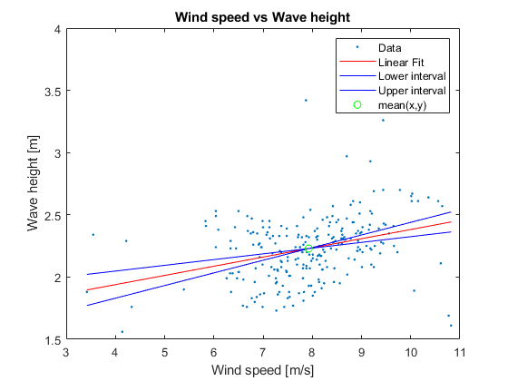
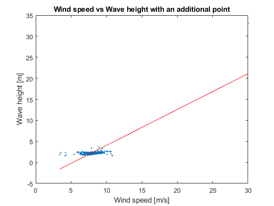
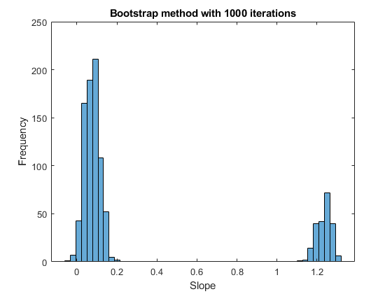

close all;
clear;
data = load("data/WindWaveData.dat");
wind = data(:,1);
wave = data(:,2);
N = length(wind);
figure(1)
plot(wind, wave, '.');
xlabel("Wind speed [m/s]")
ylabel("Wave height [m]")
title("Wind speed vs Wave height")
num = sum((wave - mean(wave)) .* (wind-mean(wind))) / (N-1);
den = std(wind) * std(wave);
r_uH = num/den;
conf_interval = sqrt(N-3)/2 * log((1+r_uH)/(1-r_uH));
fprintf("With a correlation coefficient of % 0.3f, we get a confidence interval of %0.2f ", r_uH, conf_interval);
disp("which is outside the 95% interval");
[a,b] = regress(wind, wave);
f = @(u) a + b*u;
figure(1)
hold on;
temp_x = linspace(min(wind), max(wind), 5);
plot(temp_x, a+b*temp_x, 'r')
x = wind;
y = wave;
t = tinv([0.05/2, 1-0.05/2], N-2);
Sx = std(x);
S_eps = sqrt(sum((y - f(x)).^2) / (N-2));
delta_b = S_eps * t / (sqrt(N-1) * Sx);
delta_a = -((a + (b+delta_b)*mean(wind)) - mean(wave));
fprintf("95%% confidence interval for b: [%0.5f, %0.4f]\n", b+delta_b(1), b+delta_b(2))
fprintf("95%% confidence for interval a: [%0.5f, %0.4f]\n", b+delta_a(1), b+delta_a(2))
figure(1)
hold on;
plot(temp_x, (a+delta_a(1))+(b+delta_b(1))*temp_x, 'b')
plot(temp_x, (a+delta_a(2))+(b+delta_b(2))*temp_x, 'b')
plot(mean(wind), mean(wave), 'go')
legend({'Data', 'Linear Fit', 'Lower interval', 'Upper interval', 'mean(x,y)'})
r = [((a+delta_a(2))+(b+delta_b(2))*10), ...
((a+delta_a(1))+(b+delta_b(1))*10)];
fprintf("The range at u=10 m/s is [%0.4f, %0.4f]\n", r(2), r(1))
wind = [wind; 30];
wave = [wave; 33];
[a,b] = regress(wind, wave);
figure(2)
plot(wind, wave, '.');
xlabel("Wind speed [m/s]")
ylabel("Wave height [m]")
title("Wind speed vs Wave height with an additional point")
hold on;
temp_x = linspace(min(wind), max(wind), 5);
plot(temp_x, a+b*temp_x, 'r')
bs = [];
for i = 1:1000
mask = randperm(length(wave), 50);
[a,b] = regress(wind(mask), wave(mask));
bs = [bs; b];
end
figure(3)
histogram(bs, 50)
xlabel("Slope")
ylabel("Frequency")
title("Bootstrap method with 1000 iterations")
With a correlation coefficient of 0.322, we get a confidence interval of 5.14 which is outside the 95% interval
95% confidence interval for b: [0.04607, 0.1015]
95% confidence for interval a: [0.29367, -0.1461]
The range at u=10 m/s is [2.3245, 2.4395]
  